lab-fee-invoice-pdf PASS 1.0
grade probeintent createdomain educationdifficulty d3ambiguity a2voice sloppyapps libreoffice_calc + filesbatch v11-500-s1
pls build the term lab-fee invoice sheet from the enrolment list in the same folder: one row per student, fee = credits x 18.50, total at the bottom. then export it as pdf next to it
task config + evaluator
{
"config": [
{
"type": "execute",
"parameters": {
"command": "mkdir -p '/home/user/education' && printf %s 'U3R1ZGVudCxDb3Vyc2UsQ3JlZGl0cw0KQWlzaGEgUmFobWFuLENIRU0yMTAsNA0KRGV2b24gTWFyc2gsQklPMTE4LDMNCkx1Y2lhIEZlcnJhcmksUEhZUzI0MCw1DQpPbWFyIEhhZGRhZCxDSEVNMjEwLDQNClRlc3NhIExpbmRxdmlzdCxCSU8xMTgsMw0KUmF2aSBDaGFuZHJhLEdFT0wxNTAsMg0KTm9yYSBCZWF1bGlldSxQSFlTMjQwLDUNCkt3YW1lIE9zZWksR0VPTDE1MCwyDQo=' | base64 -d > '/home/user/education/enrolment.csv' && printf %s 'UEsDBBQACAgIALy0Cl0AAAAAAAAAAAAAAAALAAAAX3JlbHMvLnJlbHOtks9qwzAMh+99CqN747SFMUacXsqgtzK6B9BsJTGJ/2BrW/b2M2OwdZSwwY6Wf/r0IdTsZzeJF0rZBq9gU9UgyOtgrO8VPJ7v17ewb1fNA03IJZIHG7MoPT4rGJjjnZRZD+QwVyGSLz9dSA65PFMvI+oRe5Lbur6R6TsD2gumOBoF6Wg2IM5vkX7DDl1nNR2Cfnbk+cqIH4lCxtQTK5gn+RrS+BTCWBUoyOsu27+6mAUXR4wGGaUOidYxFUhiS/nLqnSfSjl/JJa8dv+5I5qZvCGzrIQxfhqtGnlxC+07UEsHCGu/dgTfAAAAQgIAAFBLAwQUAAgICAC8tApdAAAAAAAAAAAAAAAADwAAAHhsL3dvcmtib29rLnhtbI1T227bMAx931cYek98SeulQZwic2q0wC5F07WPg2zTsRZZMiTmtmH/PlqO2w7bwx5siaR0eEgeza+PjfT2YKzQKmHhOGAeqEKXQm0S9vUxG02ZZ5GrkkutIGEnsOx68W5+0Gaba7316L6yCasR25nv26KGhtuxbkFRpNKm4Uim2fi2NcBLWwNgI/0oCGK/4UKxHmFm/gdDV5UoYKWLXQMKexADkiOxt7VoLVvMKyHhqS/I4237mTdEO+WyYP7ihfa98XJebHdtRqcTVnFpgQqt9eFL/h0KpIq4lMwrOUKqm5Yy5EIKPA1n/8DSSFcoHzk7x5OAg32Nd6aDvtVG/NAKuVwXRkuZMDS7c1pijKL4V2TddeyR53ZwHp+FKvUhYTSr05v9wW2fRYk1TTKeTC8G3y2ITY0Jm4ZXEfOQ5w9dxxIWB3StEsaiS+JQOFWyB8rXWVSQ/6YiN7xh9ZTrrOT5twpIFZ7z3pWU20kGKbgXVuSSOJuZoIC5KyOHOQBRwQWNQiAY1+idIhJhx8pA9UmXBLEktHP8ZU5newUSOdEcB0HYwcIRP1p061lUUtP+L2FJkRvopeRUxbydEQn7+T6O4nQaR6NoGU5GYXhzOfowubgcZTdZRq1LV+lV9osU5lBn9KU9fYuGnssDVOsTDffYq23pKPl0qv87Zv6gicVvUEsHCAw62aIAAgAAeQMAAFBLAwQUAAgICAC8tApdAAAAAAAAAAAAAAAADQAAAHhsL3N0eWxlcy54bWztWF1P2zAUfd+vsPw+kpZSYEqDGKjTXia0lmnStAeTOImHPyLbhYZfz3WcpkkLTOoeVqQ+2ff4nuOTa1u1G10sBUcPVBum5AQPjkKMqExUymQ+wbfz6cczjIwlMiVcSTrBFTX4Iv4QGVtxOisotQgUpJngwtryUxCYpKCCmCNVUgkjmdKCWAh1HphSU5IaRxI8GIbhOBCESRxHciGmwhqUqIW0YKOFkG++pgCORxh5uSuVgpUvVFJNOA7iKGgE4ihTcq0zwh6II/OEHggHkdClSyKoj6/pH/JjgWZEGjeQEcF45YeGtbCnvy1yqZm30aWHe0OvG1caxnlbmiH2QByVxFqq5RQC1PTnVQn1lbDgXqbO+0t2rkk1GJ50CHUD894pncIG6y6uh1DKSK4k4bflBGeEG4pb6Fo9yhUYR5xmFoQ1ywvXWlUGTsRaJaCz4ripvXLbgekTyvnM7daf2frrQxBdZtu7S9YBHALnvel6pSYgZcmrqXIiVi9oA3yuU3rQJWe5FHQj8UYrSxNbH7YajiOySkSF0uwJpN0C5s3mdmfTssRB/nsxsnRpvytLvAp4etSknAPYFpHJtJ4Yxkyhmbyfqylrh6FMZWsDcZXc03RlsmApUDuZwTLbqFS4rtNg1zo1PjcL1YW7lVptg/djZngw84qZnc/WwczBzMHMwczBzC5mRsf79Es5GuyVm9FeuRnuk5vz/2wm6F7f/WW+c48f7HqNX2bbzrt+/tH6O7jTB00pOw+ktqxj3EGRe2pO8Df38uadyt0tGLdM+ijYJlwpIcgqf3DSIxy/SkC/wt8tadwjjV8kLbSmMqlazmmPM3qL05vrrMc7fYl3Q3UCa9BSznsU//RdFxOC9Z8k8TNQSwcIP9SAxZECAABpEQAAUEsDBBQACAgIALy0Cl0AAAAAAAAAAAAAAAAYAAAAeGwvd29ya3NoZWV0cy9zaGVldDEueG1srVZNb9s4EL3vrxB06Glryc6Hk1RWkTrrbYG0DtZpC+yNFkcWNxSpkpQd59fvkNRX7KBIgfogicPhm5n3yKGT948lD7agNJNiFo5HcRiAyCRlYjMLv94v3l6EgTZEUMKlgFm4Bx2+T/9IdlI96ALABAgg9CwsjKmuokhnBZREj2QFAmdyqUpicKg2ka4UEOoWlTyaxPF5VBImQo9wpV6DIfOcZXAjs7oEYTyIAk4Mpq8LVukW7ZG+Co8qssNS23wGKd74mQ5vfHqEV7JMSS1zM8pk2aR2XOVldPmszjJ7TWIlUQ919RaBKyxuzTgze5djmCYO/E4FOeMG1GdJUZeccA04V5ENrMB8rdy8uZd3aGinozSJmsVpQhlSaGUPFOSz8Hp8NR9bD+fwjcFOD74DXcjdAvOrOdEtnDP+rRi9ZQLQalTdGP+Ru7nkH5EI3FnDiX8BGWsNim0KzPAWctNBGrJeAYfMAB2uW9aGY5DVvlxL3gFQyEnNjU0Bw0nV2reY8SwUlk6OkLKyIebAuS0zDDLr+wnxz0/D4EnKcpURjiSN43gw/uKWH1otnbdkL2tHC0LgpD0LaykfrMXCxlYjV4RltyL23DRJhAFB6xb6ZPqxXxroH40evVwWePjdKrNwGwaVbohAEr4zagqb9Ci+mMQn48lZRxOK8hEs5Tg9GeG5fkIxWktDv/Q838IWOPq7hIY2jODri54lkCbIqXZPyy4nlbb6NaBZrY0sm8y8QgWjFMSLYV3Mkjxilvhmwr212VuFLNkeZjo6PbcE/d6Ikybi5IWI56PLi98f8aSJePJCxNPReOo2gSfXtyViSJoouQuUI8bH9Tp0oXqJD3Lw3j/R3IU/qg6LtuHsdtXOAxdrtG7TOIm2NsHG48Oxx/i5x/zYY9J5RFhXu7V8oZViwiwr196DAvsJtuS+/2z63nNowR7Y6SAVe5LCED7HOwPUQDW8+AzLjici30g/E7VhGJi7DhWPphfTs6Zt9UM82e7iPJtMux8yv5YGqX5ppnBtsQfIpTSDcdQ18brC5lGBWrEn3BeXSNygT7nm3p72Ztgd7zCwEEvl4lC5E/cFiCVWi2orhsW6C3MWVlIZRRi2pTUn2cO1oN8LZrr7IsDrcdCbM2xSc1nam1fb9irAxlXa2Kb4pS7X4PdkrWFxaD6U4qZiuOltIa0GvSWTFbOaug7o2Vo4jgLK8hx1Esbh92m25iWlf237/Z4mklJ/C6VvSFm9m7vnmx+1NO9u4D/yrQ5WoFj+5wds397sPMYT97pOoh7AYvk0fhXL8hC47zsH2KAk0bA2HHb/qdL/AVBLBwiLqkvY3AMAAJcJAABQSwMEFAAICAgAvLQKXQAAAAAAAAAAAAAAABoAAAB4bC9fcmVscy93b3JrYm9vay54bWwucmVsc62RTWvDMAyG7/0VRvfFSQdjjDi9jEGv/fgBxlHi0MQ2kta1/34uG1sKZezQk9DX875I9eo0jeqIxEMMBqqiBIXBxXYIvYH97u3hGVbNot7gaCWPsB8Sq7wT2IAXSS9as/M4WS5iwpA7XaTJSk6p18m6g+1RL8vySdOcAc0VU61bA7RuK1C7c8L/sGPXDQ5fo3ufMMgNCc1yHpEz0VKPYuArLzIH9G355T3lPyId2CPKr4OfUjZ3CdVfZh7vegtvCdutUH7s/CTz8reZRa2v3t18AlBLBwhP8Pl60gAAACUCAABQSwMEFAAICAgAvLQKXQAAAAAAAAAAAAAAABQAAAB4bC9zaGFyZWRTdHJpbmdzLnhtbI2PwQrCMBBE735F2LumKohIEg+CP6B+QGhWG2g2NbsV/XujIN7E4zBvZhizvade3bBwzGRhPmtAIbU5RLpYOB330zUoFk/B95nQwgMZtm5imEXVKLGFTmTYaM1th8nzLA9I1TnnkrxUWS6ah4I+cIcoqdeLplnp5COBavNIYmEJaqR4HXH30c5wdOY9seHBt3W5djCWG4I7yBiQxGhxRr+4H+yuYIjCf7F7xC+n60P3BFBLBwg5PmkKsQAAAB8BAABQSwMEFAAICAgAvLQKXQAAAAAAAAAAAAAAABEAAABkb2NQcm9wcy9jb3JlLnhtbG2RzU7DMBCE7zxF5HviBCSEoiSVOHCiElKpxNXY29TFf7K3Tfv2OAk1ReS2M/t5bO82q7NW2Ql8kNa0pCpKkoHhVkjTt2T7/pI/kSwgM4Ipa6AlFwhk1d013NXcenjz1oFHCSGLQSbU3LVkj+hqSgPfg2ahiISJzZ31mmGUvqeO8S/WA70vy0eqAZlgyOgYmLuUSH4iBU+R7ujVFCA4BQUaDAZaFRX9ZRG8DosHps4NqSVeHCyi12aiz0EmcBiGYniY0Pj+in6sXzfTV3NpxlFxIF0jeM09MLS+a+itiLWAwL10GEc+N/8YUStm+mOcTwcm324mJFnj5BULuI472kkQz5eYseBFy8NJjnvtyolIcrwiHD8PwHG+P4lYo0QFs30t/+26+wZQSwcILcuMlCcBAAA3AgAAUEsDBBQACAgIALy0Cl0AAAAAAAAAAAAAAAAQAAAAZG9jUHJvcHMvYXBwLnhtbJ2QTW/CMAyG7/sVVcS1TSgbIJQGbZp2QtoOHdqtyhIXMuVLSYrKv18ADTjPJ/u19dh+6Xo0ujhAiMrZBk0rggqwwklldw36bN/KJSpi4lZy7Sw06AgRrdkD/QjOQ0gKYpEJNjZon5JfYRzFHgyPVW7b3OldMDzlMuyw63sl4NWJwYBNuCZkjmFMYCXI0l+B6EJcHdJ/odKJ031x2x595jHagvGaJ2AU39LWJa5bZYCRLF8L+uy9VoKn7AjbqO8A7+cVeFHNqkVVTzbKDmP3tZx388fibqDLL/yASHhGJi+D0rKsKb6Hncjbi9Vs+lSRHOeBP43im6vsF1BLBwgZ5zXq+QAAAJoBAABQSwMEFAAICAgAvLQKXQAAAAAAAAAAAAAAABMAAABbQ29udGVudF9UeXBlc10ueG1svVQ7T8MwEN77KyKvKHbLgBBK2oHHCJUoMzLxJTGNH7Ld0v57zilUVQkpiIjJsu++l092NtuoJlmD89LonEzomCSgCyOkrnLytLhLL8lsOsoWWws+wV7tc1KHYK8Y80UNintqLGislMYpHnDrKmZ5seQVsPPx+IIVRgfQIQ2Rg0yzGyj5qgnJ7QaPd7oIJ8n1ri9K5YRb28iCByyzWGWdOAeN7wGutThyl344o4hse3wtrT/7XsHq6khAqpgsnncjXi10Q9oCYh7wup0UkMy5C/dcYQN7jkkYHThPl9KmYW/GLV+MWdL+a+9QM2UpCxCmWCmEUG8dcOFrgKAa2q5UcalP6PuwbcAPrd6S/iB5C/CsXSYDm9jzn/CxG/fhHP5p9L7mDsRjcPi+B5/AIXefD8TPnbEefwYHvzfxmTuiU4tE4ILsH/1eEan/nBriWxcgvmqPMtZ+lNN3UEsHCI/25TZZAQAAVwUAAFBLAQIUABQACAgIALy0Cl1rv3YE3wAAAEICAAALAAAAAAAAAAAAAAAAAAAAAABfcmVscy8ucmVsc1BLAQIUABQACAgIALy0Cl0MOtmiAAIAAHkDAAAPAAAAAAAAAAAAAAAAABgBAAB4bC93b3JrYm9vay54bWxQSwECFAAUAAgICAC8tApdP9SAxZECAABpEQAADQAAAAAAAAAAAAAAAABVAwAAeGwvc3R5bGVzLnhtbFBLAQIUABQACAgIALy0Cl2LqkvY3AMAAJcJAAAYAAAAAAAAAAAAAAAAACEGAAB4bC93b3Jrc2hlZXRzL3NoZWV0MS54bWxQSwECFAAUAAgICAC8tApdT/D5etIAAAAlAgAAGgAAAAAAAAAAAAAAAABDCgAAeGwvX3JlbHMvd29ya2Jvb2sueG1sLnJlbHNQSwECFAAUAAgICAC8tApdOT5pCrEAAAAfAQAAFAAAAAAAAAAAAAAAAABdCwAAeGwvc2hhcmVkU3RyaW5ncy54bWxQSwECFAAUAAgICAC8tApdLcuMlCcBAAA3AgAAEQAAAAAAAAAAAAAAAABQDAAAZG9jUHJvcHMvY29yZS54bWxQSwECFAAUAAgICAC8tApdGec16vkAAACaAQAAEAAAAAAAAAAAAAAAAAC2DQAAZG9jUHJvcHMvYXBwLnhtbFBLAQIUABQACAgIALy0Cl2P9uU2WQEAAFcFAAATAAAAAAAAAAAAAAAAAO0OAABbQ29udGVudF9UeXBlc10ueG1sUEsFBgAAAAAJAAkAPwIAAIcQAAAAAA==' | base64 -d > '/home/user/education/lab_fees.xlsx'",
"shell": true
}
},
{
"type": "open",
"parameters": {
"path": "/home/user/education/lab_fees.xlsx"
}
}
],
"evaluator": {
"func": "check_include_exclude",
"result": {
"type": "vm_command_line",
"command": [
"python3",
"-c",
"import sys, traceback\ndef _main():\n import glob, os, re, sys, zipfile\n import xml.etree.ElementTree as ET\n d = '/home/user/education'\n err = []\n pdfs = [p for p in glob.glob(os.path.join(d, '*.pdf')) if os.path.getsize(p) > 800]\n if not pdfs:\n err.append('no pdf export in %s' % d)\n xl = os.path.join(d, 'lab_fees.xlsx')\n vals = []\n if not os.path.isfile(xl):\n err.append('lab_fees.xlsx missing')\n else:\n z = zipfile.ZipFile(xl)\n ns = '{http://schemas.openxmlformats.org/spreadsheetml/2006/main}'\n shared = []\n if 'xl/sharedStrings.xml' in z.namelist():\n for si in ET.fromstring(z.read('xl/sharedStrings.xml')):\n shared.append(''.join(t.text or '' for t in si.iter(ns + 't')))\n root = ET.fromstring(z.read('xl/worksheets/sheet1.xml'))\n for c in root.iter(ns + 'c'):\n v = c.find(ns + 'v')\n if v is None or v.text is None:\n continue\n if c.get('t') == 's':\n continue\n try:\n vals.append(float(v.text))\n except ValueError:\n pass\n want = [74.0, 55.5, 92.5, 74.0, 55.5, 37.0, 92.5, 37.0]\n for w in want:\n if not any(abs(w - x) <= 0.02 for x in vals):\n err.append('fee %.2f missing' % w)\n if not any(abs(518.0 - x) <= 0.05 for x in vals):\n err.append('total 518.00 missing')\n for e in err:\n print(e, file=sys.stderr)\n print('FAIL' if err else 'PASS')\n\ntry:\n _main()\nexcept Exception:\n traceback.print_exc(file=sys.stderr)\n print(\"FAIL\")\n"
]
},
"expected": {
"type": "rule",
"rules": {
"include": [
"PASS"
],
"exclude": [
"FAIL"
]
}
},
"postconfig": [
{
"type": "activate_window",
"parameters": {
"window_name": "lab_fees.xlsx - LibreOffice Calc",
"strict": true
}
},
{
"type": "sleep",
"parameters": {
"seconds": 0.5
}
},
{
"type": "execute",
"parameters": {
"command": [
"python",
"-c",
"import pyautogui; pyautogui.hotkey(\"ctrl\", \"s\");"
]
}
},
{
"type": "sleep",
"parameters": {
"seconds": 0.5
}
}
]
}
}
step 1 05:33:27
THINKINGLet me understand the task. I need to:
1. Find the enrolment list in the same folder as this "lab_fees" spreadsheet.
2. Build a term lab-fee invoice sheet: one row per student, fee = credits x 18.50, total at bottom.
3. Export as PDF next to the file.
First I need to see the current state and find the enrolment list. Let me take a screenshot to see the current spreadsheet, then find the folder location. The current file is "lab_fees". Let me first look at the current spreadsheet content and find the enrolment list file in the same folder.
I should start by understanding what data exists. Let me take a screenshot first, but I already have one. The current sheet has headers: Student, Credits, Fee. I need to find the enrolment list file. Let me open a file manager or check the folder. Actually, better to look at the files in the same folder via a terminal to know what's there.
Let me start by taking a screenshot to confirm current state, then find the folder. I'll use the file manager. But I don't have a bash tool directly - I only have the computer tool. Wait, the system capability mentions bash tool but only computer tool is available. So I must use GUI.
Let me first check the file location. I can use LibreOffice's Recent Documents or the file manager. Let me open the Files application to find the folder. Actually, let me first check the current file's location via LibreOffice (File > Properties or just the title). Better to open a file manager.
Let me click on the Files icon in the taskbar.
ACTIONI'll start by understanding the current spreadsheet and locating the enrolment list file. Let me first check the current file's location and open a file manager to find the enrolment list in the same folder.
TOOL CALL<tool_call>
<function=computer_use>
<parameter=action>
left_click
</parameter>
<parameter=coordinate>
[17, 560]
</parameter>
</function>
</tool_call>
EXECUTED (pyautogui in VM)pyautogui.click(32, 605)
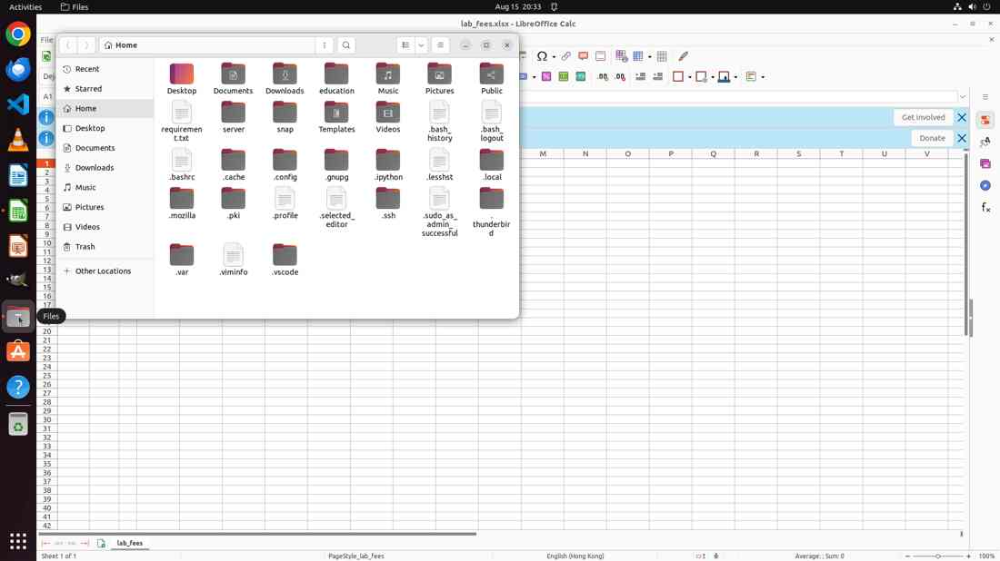
step 2 05:33:34
THINKINGThe file is lab_fees.xlsx. I need to find where it is located. There's an "education" folder and "Documents". Let me check the "education" folder first as it's likely where course files are. Let me double-click education.
ACTIONThe file is `lab_fees.xlsx`. Let me find where it's located. I'll check the "education" folder which seems relevant.
TOOL CALL<tool_call>
<function=computer_use>
<parameter=action>
double_click
</parameter>
<parameter=coordinate>
[335, 131]
</parameter>
</function>
</tool_call>
EXECUTED (pyautogui in VM)pyautogui.doubleClick(643, 141)
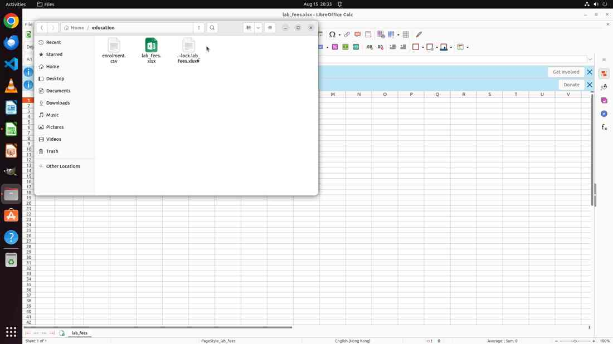
step 3 05:33:42
THINKINGFound the folder: /home/user/education contains enrolment.csv, lab_fees.xlsx. Let me open the enrolment.csv to see its contents. I'll double-click it to open in LibreOffice.
ACTIONFound it. The folder `/home/user/education` contains `enrolment.csv` and `lab_fees.xlsx`. Let me open the enrolment list to see its data.
TOOL CALL<tool_call>
<function=computer_use>
<parameter=action>
double_click
</parameter>
<parameter=coordinate>
[185, 139]
</parameter>
</function>
</tool_call>
EXECUTED (pyautogui in VM)pyautogui.doubleClick(355, 150)
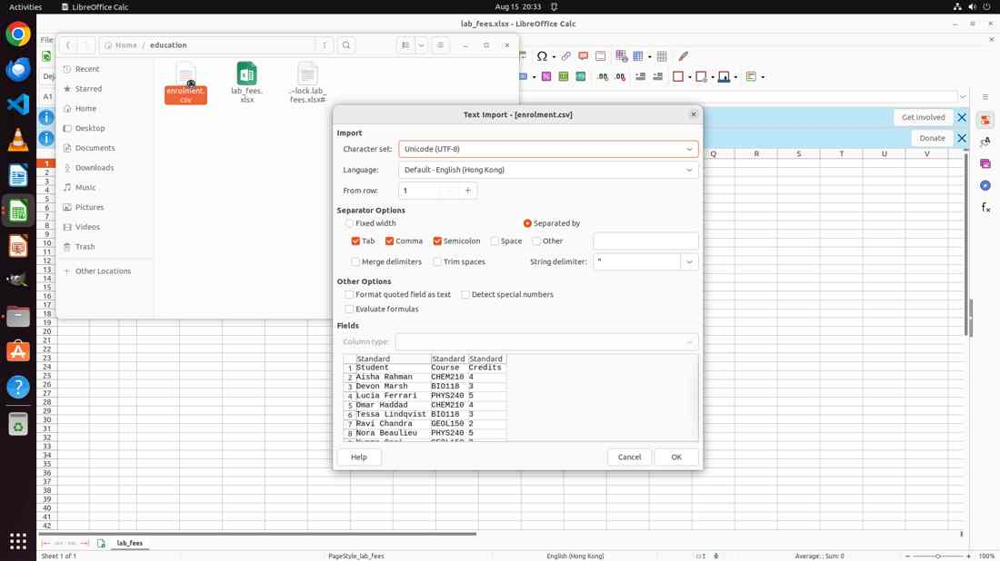
step 4 05:33:50
THINKINGThe CSV has columns: Student, Course, Credits. Preview shows:
1 Student Course Credits
2 Aisha Rahman CHEM210 4
3 Devon Marsh BIO118 3
4 Lucia Ferrari PHYS240 5
5 Omar Haddad CHEM210 4
6 Tessa Lindqvist BIO118 3
7 Ravi Chandra GEOL150 2
8 Nora Beaulieu PHYS240 5
9 Kiana Osei GEOL150 2 (partially visible)
I need to see the full list. Let me click OK to open it fully and scroll. Let me click OK.
ACTIONThe CSV has columns: Student, Course, Credits. Let me open it fully to see all rows by clicking OK.
TOOL CALL<tool_call>
<function=computer_use>
<parameter=action>
left_click
</parameter>
<parameter=coordinate>
[674, 813]
</parameter>
</function>
</tool_call>
EXECUTED (pyautogui in VM)pyautogui.click(1295, 878)
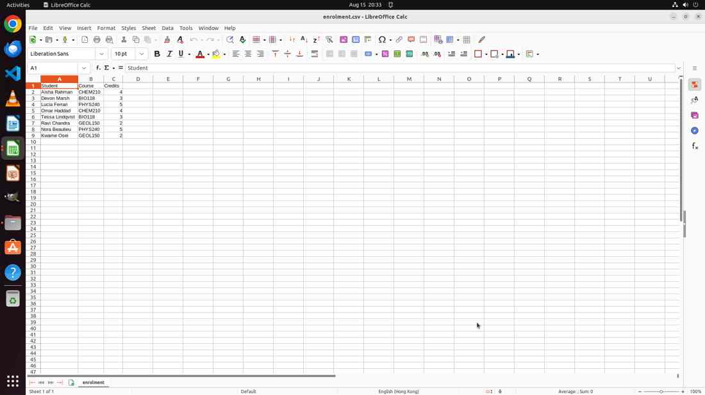
step 5 05:34:04
THINKINGNow I can see the full enrolment data:
Row 1: Student | Course | Credits
Row 2: Aisha Rahman | CHEM210 | 4
Row 3: Devon Marsh | BIO118 | 3
Row 4: Lucia Ferrari | PHYS240 | 5
Row 5: Omar Haddad | CHEM210 | 4
Row 6: Tessa Lindqvist | BIO118 | 3
Row 7: Ravi Chandra | GEOL150 | 2
Row 8: Nora Beaulieu | PHYS240 | 5
Row 9: Kwame Osei | GEOL150 | 2
That's 8 students. Now the lab_fees.xlsx already has headers: Student (A1), Credits (B1), Fee (C1). So I need to fill in the lab_fees sheet with these students. The columns there are: Student, Credits, Fee (no Course column).
Wait, let me reconsider. The lab_fees.xlsx headers were: A1=Student, B1=Credits, C1=Fee. So I should enter Student, Credits, Fee = credits * 18.50.
Let me now switch to the lab_fees.xlsx window. I'll use the Window menu or the taskbar. Let me switch to LibreOffice Calc lab_fees. I can use the Window menu in LibreOffice.
Actually the lab_fees window is behind. Let me switch to it. I'll click on the Window menu to select lab_fees.xlsx.
ACTIONI now have all the enrolment data (8 students). Let me record it:
- Aisha Rahman, CHEM210, 4
- Devon Marsh, BIO118, 3
- Lucia Ferrari, PHYS240, 5
- Omar Haddad, CHEM210, 4
- Tessa Lindqvist, BIO118, 3
- Ravi Chandra, GEOL150, 2
- Nora Beaulieu, PHYS240, 5
- Kwame Osei, GEOL150, 2
Now let me switch to the `lab_fees.xlsx` window which already has headers (Student, Credits, Fee).
TOOL CALL<tool_call>
<function=computer_use>
<parameter=action>
left_click
</parameter>
<parameter=coordinate>
[294, 70]
</parameter>
</function>
</tool_call>
EXECUTED (pyautogui in VM)pyautogui.click(565, 75)
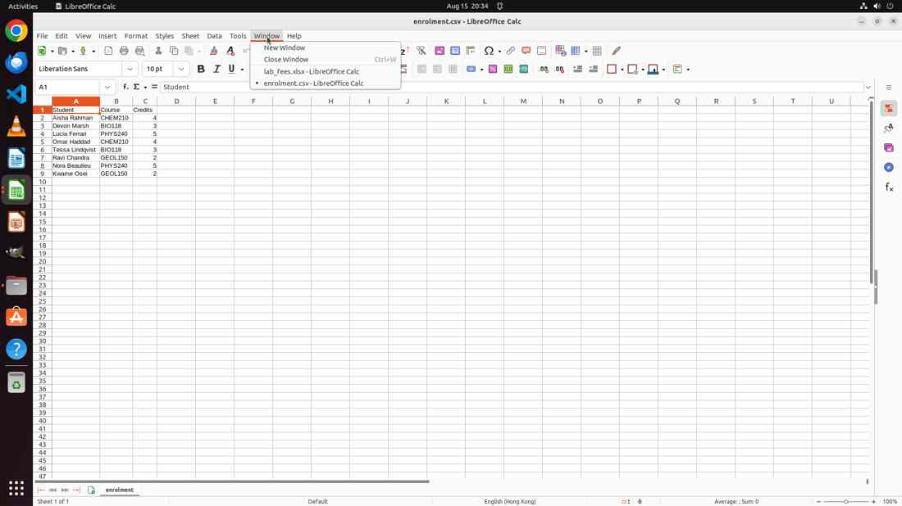
step 6 05:34:23
THINKINGI see the Window menu with lab_fees.xlsx option. Let me click it to switch to that window.
TOOL CALL<tool_call>
<function=computer_use>
<parameter=action>
left_click
</parameter>
<parameter=coordinate>
[345, 139]
</parameter>
</function>
</tool_call>
EXECUTED (pyautogui in VM)pyautogui.click(663, 150)
step 7 05:34:36
THINKINGNow I'm in lab_fees.xlsx. Headers: A1=Student, B1=Credits, C1=Fee. I need to fill rows 2-9 with students, and add a total at the bottom.
I'll enter data starting at A2. I'll type each row. For the Fee column I'll use formulas =B2*18.50 etc.
Let me click A2 and type data. I can type across using Tab and Enter. Actually, I'll type values in each cell. The most efficient: click A2, type name, Tab, credits, Tab, fee formula, Enter (returns to A3). But Tab then Enter in LibreOffice returns to the column where I started the row, next row. Let me do that.
Let me click A2 first.
ACTIONI'm now in `lab_fees.xlsx` with headers Student (A1), Credits (B1), Fee (C1). Let me fill in the data. I'll click A2 and enter each student's row using Tab between columns and Enter to move to the next row.
TOOL CALL<tool_call>
<function=computer_use>
<parameter=action>
left_click
</parameter>
<parameter=coordinate>
[73, 305]
</parameter>
</function>
</tool_call>
EXECUTED (pyautogui in VM)pyautogui.click(140, 329)
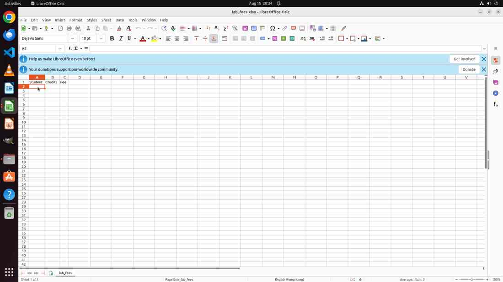
step 8.1 05:34:50
THINKINGI'm at A2. Now I'll type the data. When I type and press Tab, it moves right. When I press Enter after tabbing, it moves to the next row at the starting column (A). This is standard LibreOffice behavior. Let me type all rows in one batch.
Row format: Name [Tab] Credits [Tab] Fee formula [Enter]
For Fee I'll use =B2*18.50. Let me batch all 8 students.
ACTIONI'm at A2. Now I'll type all 8 student rows. Using Tab to move across columns and Enter to go to the next row (which returns to column A).
TOOL CALL<tool_call>
<function=computer_use>
<parameter=action>
type
</parameter>
<parameter=text>
Aisha Rahman 4 =B2*18.5
Devon Marsh 3 =B3*18.5
Lucia Ferrari 5 =B4*18.5
Omar Haddad 4 =B5*18.5
Tessa Lindqvist 3 =B6*18.5
Ravi Chandra 2 =B7*18.5
Nora Beaulieu 5 =B8*18.5
Kwame Osei 2 =B9*18.5
</parameter>
</function>
</tool_call>
EXECUTED (pyautogui in VM)pyautogui.typewrite("Aisha Rahman\t4\t=B2*18.5")
step 8.2 05:34:54
EXECUTED (pyautogui in VM)pyautogui.press("enter")
step 8.3 05:34:57
EXECUTED (pyautogui in VM)pyautogui.typewrite("Devon Marsh\t3\t=B3*18.5")
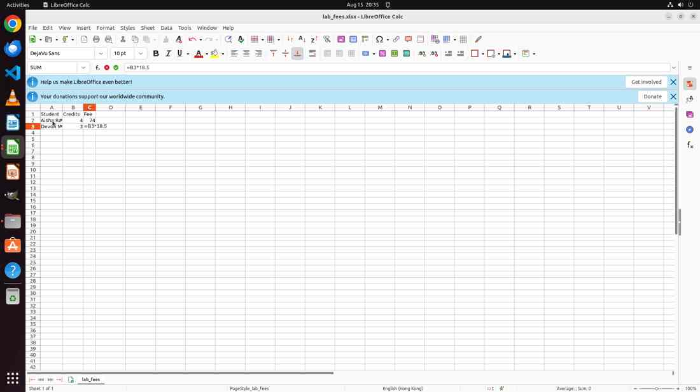
step 8.4 05:35:00
EXECUTED (pyautogui in VM)pyautogui.press("enter")
step 8.5 05:35:04
EXECUTED (pyautogui in VM)pyautogui.typewrite("Lucia Ferrari\t5\t=B4*18.5")
step 8.6 05:35:07
EXECUTED (pyautogui in VM)pyautogui.press("enter")
step 8.7 05:35:11
EXECUTED (pyautogui in VM)pyautogui.typewrite("Omar Haddad\t4\t=B5*18.5")
step 8.8 05:35:14
EXECUTED (pyautogui in VM)pyautogui.press("enter")
step 8.9 05:35:18
EXECUTED (pyautogui in VM)pyautogui.typewrite("Tessa Lindqvist\t3\t=B6*18.5")
step 8.10 05:35:26
EXECUTED (pyautogui in VM)pyautogui.press("enter")
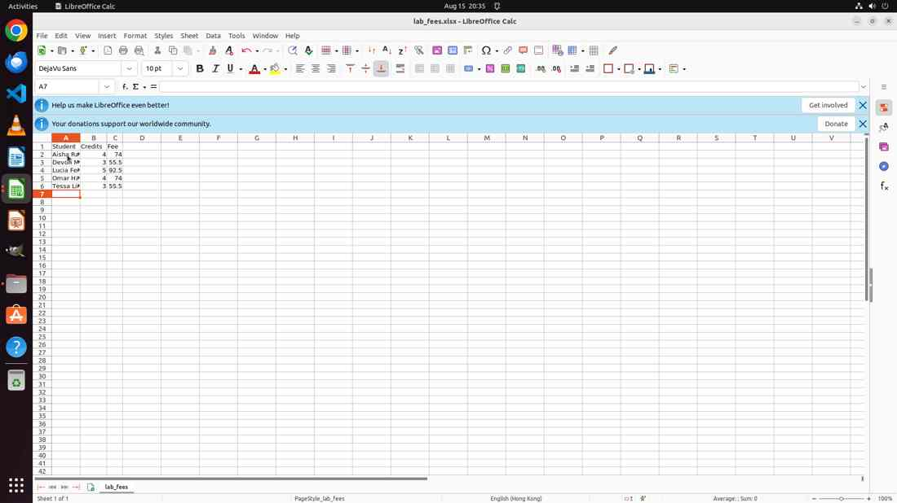
step 8.11 05:35:30
EXECUTED (pyautogui in VM)pyautogui.typewrite("Ravi Chandra\t2\t=B7*18.5")
step 8.12 05:35:39
EXECUTED (pyautogui in VM)pyautogui.press("enter")
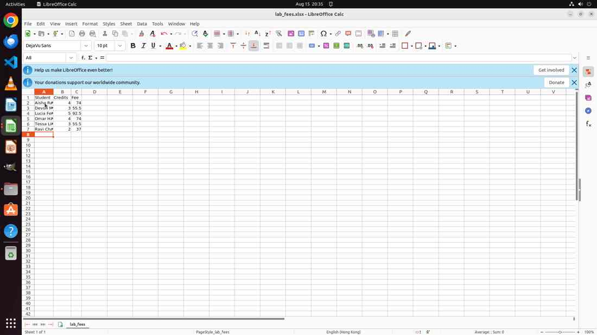
step 8.13 05:35:43
EXECUTED (pyautogui in VM)pyautogui.typewrite("Nora Beaulieu\t5\t=B8*18.5")
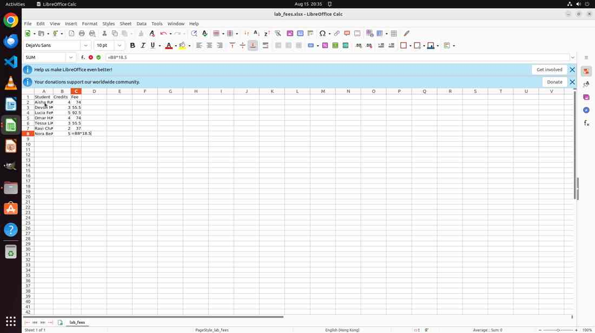
step 8.14 05:35:47
EXECUTED (pyautogui in VM)pyautogui.press("enter")
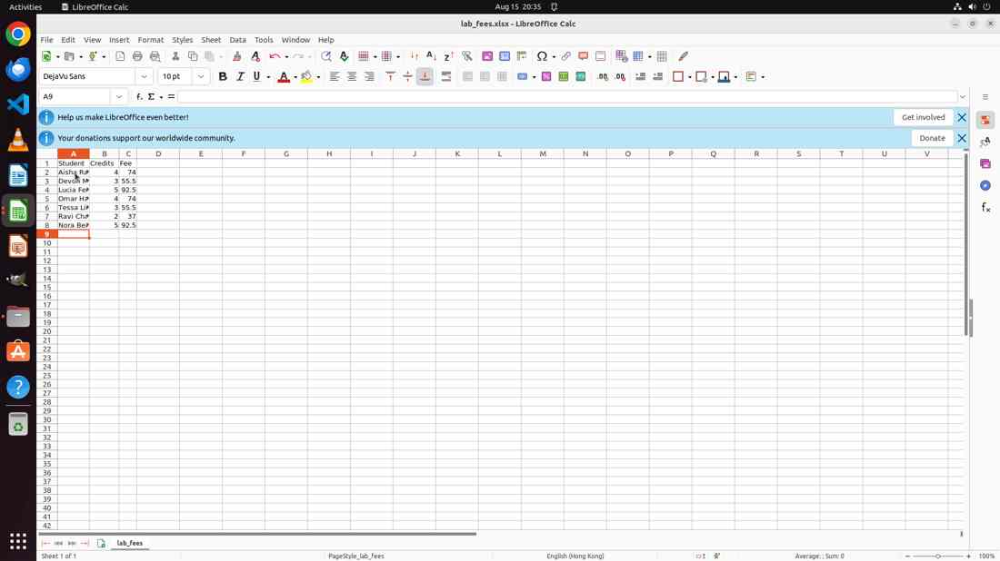
step 8.15 05:35:50
EXECUTED (pyautogui in VM)pyautogui.typewrite("Kwame Osei\t2\t=B9*18.5")
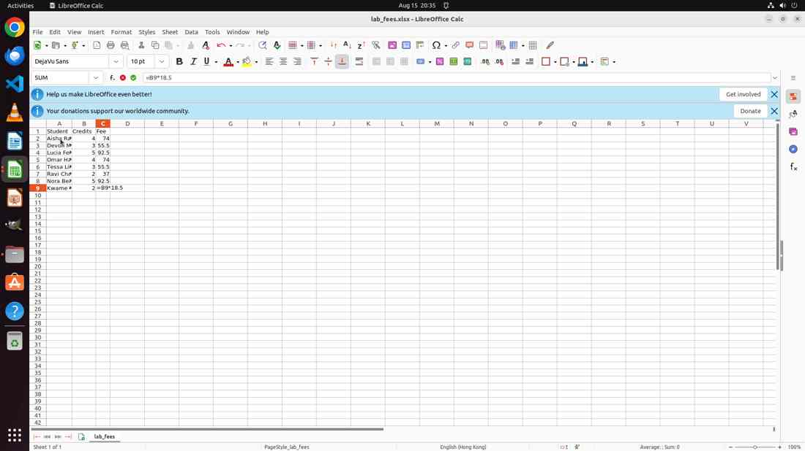
step 9 05:36:00
THINKINGThe last cell C9 is still in edit mode showing "=B9*18.5". I need to press Enter to commit it. Then I'll add a Total row at row 10. Let me press Enter first, then add total.
Row 10: A10 = "Total", C10 = sum of fees. Actually I should put Total label and sum. Let me put "Total" in B10 (or A10) and sum in C10. I'll put "Total" in A10 and =SUM(C2:C9) in C10. Actually to align, put Total in A10 and the sum in C10. Let me do that.
Let me press Enter to commit C9 first.
ACTIONThe last cell is still in edit mode. Let me commit it and add a Total row at row 10.
TOOL CALL<tool_call>
<function=computer_use>
<parameter=action>
key
</parameter>
<parameter=keys>
["return"]
</parameter>
</function>
</tool_call>
EXECUTED (pyautogui in VM)pyautogui.press("return")
step 10 05:36:15
THINKINGAll 8 rows are filled. C9 = 37 (Kwame, 2 credits). Now cursor is at A10. I'll add the Total row: A10="Total", then C10 = sum. I'll type "Total", Tab (to B10), Tab (to C10), then sum formula. Actually let me put Total in A10, leave B10 blank, and put sum in C10. I'll type Total, Tab, Tab, =SUM(C2:C9), Enter.
Wait, Tab from A10 goes to B10, Tab again to C10. Then type sum. That works.
ACTIONAll 8 rows are filled correctly. Now at A10, I'll add the Total row: "Total" label and the sum of all fees in C10.
TOOL CALL<tool_call>
<function=computer_use>
<parameter=action>
type
</parameter>
<parameter=text>
Total =SUM(C2:C9)
</parameter>
</function>
</tool_call>
EXECUTED (pyautogui in VM)pyautogui.typewrite("Total\t\t=SUM(C2:C9)")
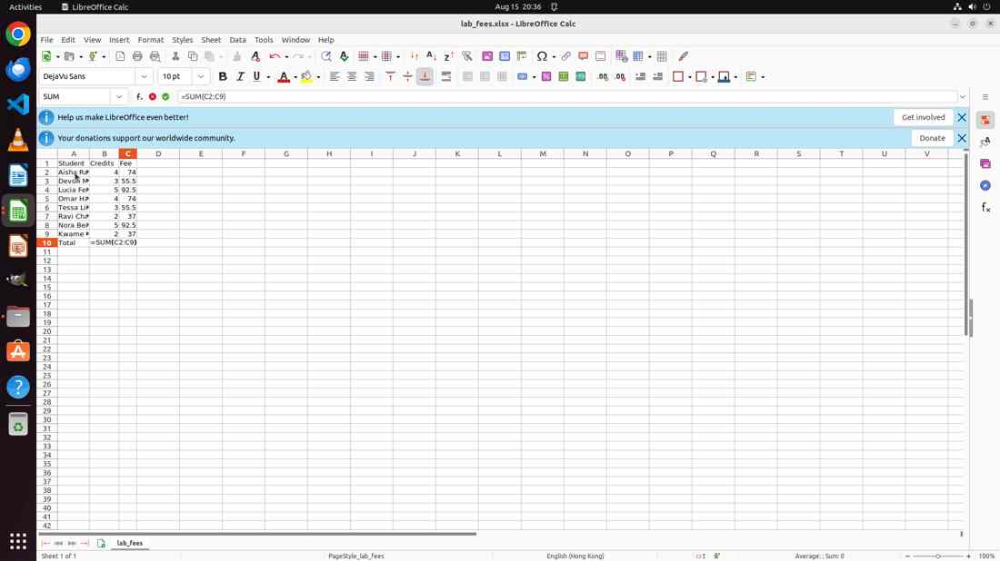
step 11 05:36:30
THINKINGThe formula =SUM(C2:C9) is still in edit mode in C10 (showing the green checkmark). Wait, the last Enter should have committed it. But the formula bar shows "=SUM(C2:C9)" with a green check - meaning it's still being edited? Actually it shows the cell is in edit state. Let me press Enter to commit.
Wait, actually looking closer, the cell C10 shows the formula text and the Name box says "SUM" and formula bar shows the sum formula with green check. It seems it's still in edit mode. The type ended with \n which should have committed. But maybe the last newline committed and moved to C11. Hmm, but the display still shows the formula in C10 as text "=SUM(C2:C9)". Let me press Enter to be safe, then check.
ACTIONThe total formula is in place but appears to still be in edit mode. Let me press Enter to commit it.
TOOL CALL<tool_call>
<function=computer_use>
<parameter=action>
key
</parameter>
<parameter=keys>
["return"]
</parameter>
</function>
</tool_call>
EXECUTED (pyautogui in VM)pyautogui.press("return")
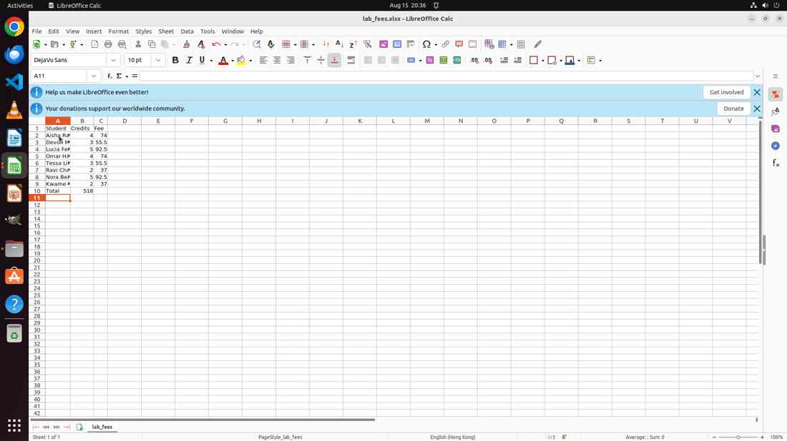
step 12 05:36:42
THINKINGThe total is now 518 in C10. Let me verify: credits are 4,3,5,4,3,2,5,2 = 28 credits. 28 * 18.5 = 518. Correct!
Fees: 74, 55.5, 92.5, 74, 55.5, 37, 92.5, 37 = 518. Correct.
Now the sheet is complete. I need to:
1. Save the file (Ctrl+S, keep xlsx format).
2. Export as PDF next to it (in /home/user/education/).
Let me first save with Ctrl+S, which will prompt to keep xlsx format. Then export PDF.
Actually, let me do PDF export. File > Export as PDF. But first let me save the xlsx. Let me press Ctrl+S.
ACTIONThe invoice sheet is complete: 8 students with fees and a total of 518 (28 credits × 18.50). Now let me save the file, keeping the xlsx format.
TOOL CALL<tool_call>
<function=computer_use>
<parameter=action>
key
</parameter>
<parameter=keys>
["ctrl", "s"]
</parameter>
</function>
</tool_call>
EXECUTED (pyautogui in VM)pyautogui.hotkey("ctrl", "s")
step 13 05:36:56
THINKINGNo format dialog appeared this time. Usually saving xlsx prompts "Use Excel 2007-365!" dialog. Maybe it saved directly or the dialog will appear. Let me wait/screenshot. Actually the screenshot shows no dialog. It's possible the dialog didn't appear because... Hmm. Let me take a screenshot to confirm. Actually, the save might have already completed silently or a dialog might appear shortly. Let me take a screenshot.
ACTIONLet me take a screenshot to check if a format dialog appeared.
TOOL CALL<tool_call>
<function=computer_use>
<parameter=action>
screenshot
</parameter>
</function>
</tool_call>
EXECUTED (pyautogui in VM)WAIT
step 14 05:37:09
THINKINGNo dialog appeared, so the file saved (perhaps the "keep format" dialog was disabled or it saved silently). The file is saved. Now I need to export as PDF in the same folder (/home/user/education/). Let me use File > Export as PDF.
Let me click File menu.
ACTIONThe file saved without a format prompt. Now let me export it as PDF using File > Export as PDF.
TOOL CALL<tool_call>
<function=computer_use>
<parameter=action>
left_click
</parameter>
<parameter=coordinate>
[47, 70]
</parameter>
</function>
</tool_call>
EXECUTED (pyautogui in VM)pyautogui.click(90, 75)
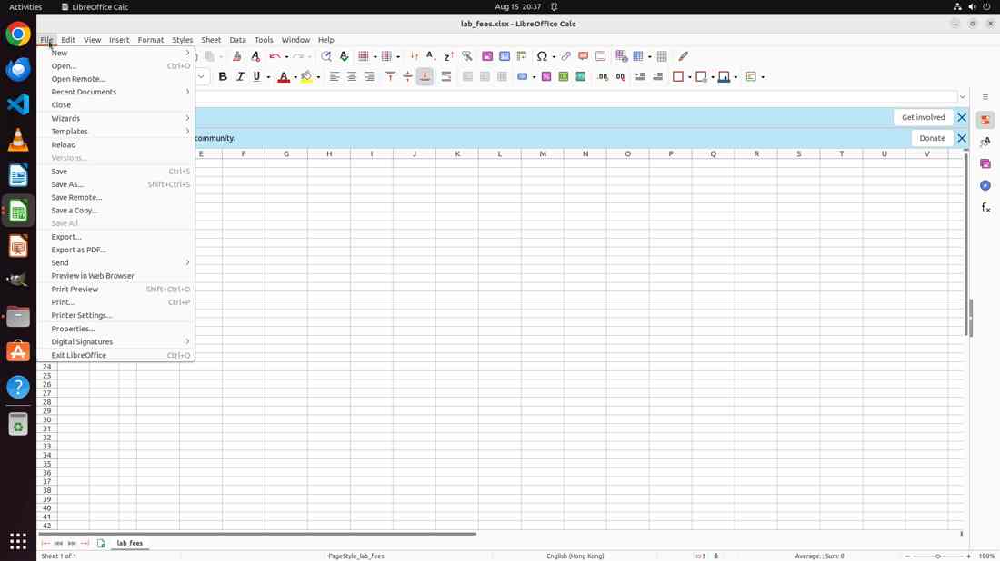
step 15 05:37:20
THINKINGI see the File menu. I'll click "Export as PDF...".
TOOL CALL<tool_call>
<function=computer_use>
<parameter=action>
left_click
</parameter>
<parameter=coordinate>
[78, 443]
</parameter>
</function>
</tool_call>
EXECUTED (pyautogui in VM)pyautogui.click(149, 478)
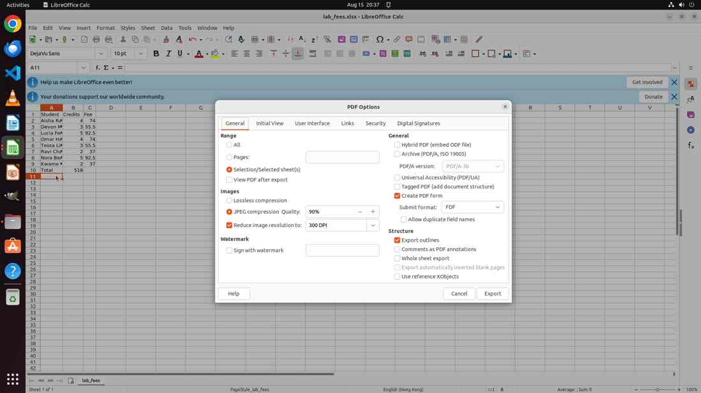
step 16 05:37:39
THINKINGThe PDF Options dialog appeared. The Range is set to "Selection/Selected sheet(s)". I want to export the whole document. Since there's only one sheet with data, "All" would be safer. Let me select "All" to be safe. Actually "Selection/Selected sheet(s)" - the selected cell A11 is on the lab_fees sheet, so it would export the current sheet. That's fine, there's only one sheet. But to be safe, let me select "All". Let me click the "All" radio button.
ACTIONThe PDF Options dialog appeared. Let me select "All" for the range to ensure the full sheet is exported, then click Export.
TOOL CALL<tool_call>
<function=computer_use>
<parameter=action>
left_click
</parameter>
<parameter=coordinate>
[327, 366]
</parameter>
</function>
</tool_call>
EXECUTED (pyautogui in VM)pyautogui.click(628, 395)
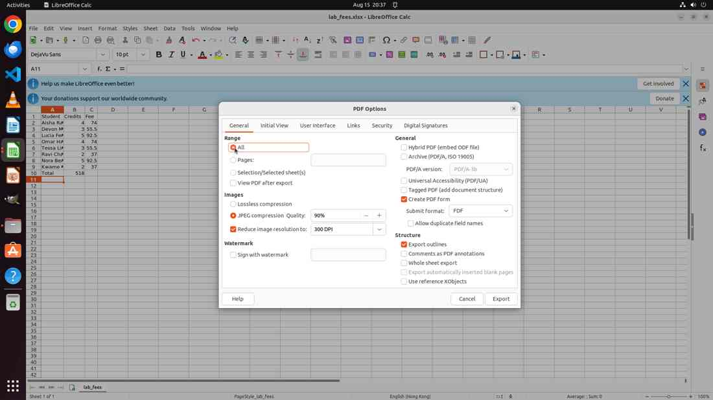
step 17 05:37:52
THINKING"All" is selected. Now click Export.
ACTION"All" is selected. Now I'll click Export.
TOOL CALL<tool_call>
<function=computer_use>
<parameter=action>
left_click
</parameter>
<parameter=coordinate>
[699, 744]
</parameter>
</function>
</tool_call>
EXECUTED (pyautogui in VM)pyautogui.click(1343, 804)
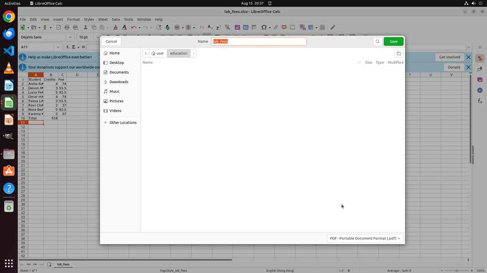
step 18 05:38:05
THINKINGThe save dialog appeared, already in the "education" folder (path shows user > education), with the name "lab_fees" and PDF format selected. This is exactly what I want - the PDF will be saved next to the xlsx file. Let me click Save.
ACTIONThe save dialog is already in the `education` folder with name "lab_fees" and PDF format. This is exactly next to the xlsx file. Let me click Save.
TOOL CALL<tool_call>
<function=computer_use>
<parameter=action>
left_click
</parameter>
<parameter=coordinate>
[806, 150]
</parameter>
</function>
</tool_call>
EXECUTED (pyautogui in VM)pyautogui.click(1549, 162)
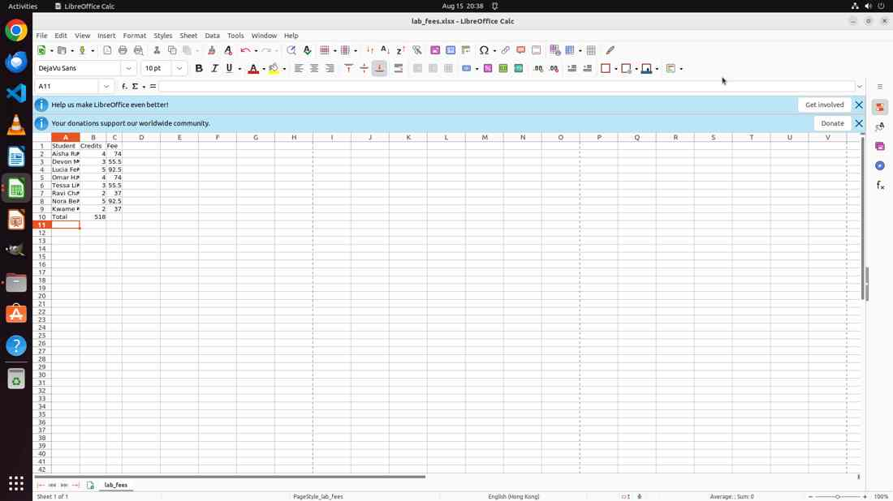
step 19 05:38:59
THINKINGThe PDF has been exported. The dialog closed and I'm back to the spreadsheet. Let me verify the PDF was created in the education folder by opening the Files app. Let me open the Files window (which should still be open in background). Let me switch to it via the taskbar Files icon.
Actually, let me verify by opening the file manager. I'll click on the Files icon.
ACTIONThe PDF has been exported. Let me verify it was created in the education folder by checking the file manager.
TOOL CALL<tool_call>
<function=computer_use>
<parameter=action>
left_click
</parameter>
<parameter=coordinate>
[17, 560]
</parameter>
</function>
</tool_call>
EXECUTED (pyautogui in VM)pyautogui.click(32, 605)
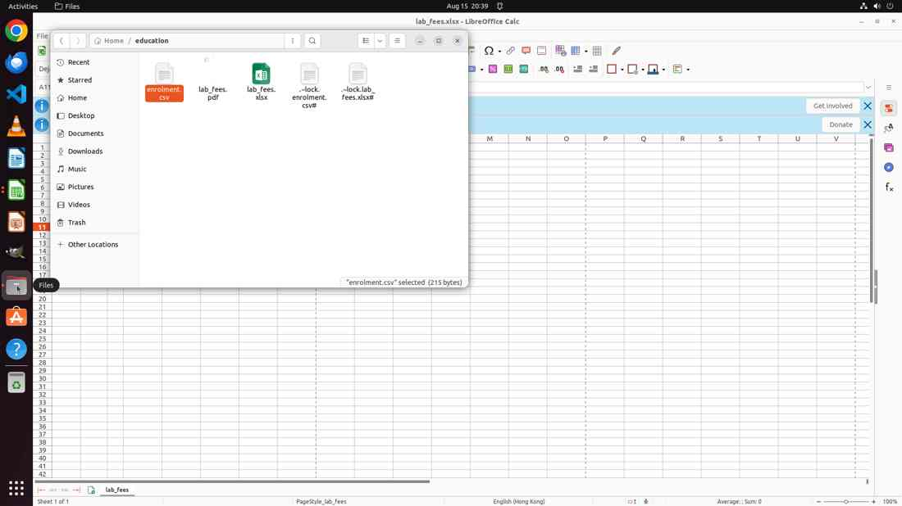
step 20 05:39:19
THINKINGThe education folder now contains:
- enrolment.csv
- lab_fees.pdf (newly created!)
- lab_fees.xlsx
- .~lock files
The PDF was successfully created next to the xlsx file. The task is complete.
Let me summarize:
1. Built the term lab-fee invoice in lab_fees.xlsx with one row per student (8 students), fee = credits × 18.50, and a Total row of 518 at the bottom.
2. Saved the xlsx.
3. Exported lab_fees.pdf in the same education folder.
Everything is done. The task is complete.
ACTIONThe task is complete. The `education` folder now contains the newly created `lab_fees.pdf` alongside the `lab_fees.xlsx` spreadsheet and the source `enrolment.csv`.
Summary of what I did:
1. **Located the enrolment list** — Found `enrolment.csv` in `/home/user/education/` (same folder as `lab_fees.xlsx`) and read all 8 students' credits.
2. **Built the invoice sheet** in `lab_fees.xlsx` (which already had Student / Credits / Fee headers):
- Aisha Rahman – 4 → 74
- Devon Marsh – 3 → 55.5
- Lucia Ferrari – 5 → 92.5
- Omar Haddad – 4 → 74
- Tessa Lindqvist – 3 → 55.5
- Ravi Chandra – 2 → 37
- Nora Beaulieu – 5 → 92.5
- Kwame Osei – 2 → 37
- Each fee uses the formula `=credits×18.5`, and a **Total** row at the bottom shows **518** (28 credits × 18.50).
3. **Saved** the workbook (kept .xlsx) and **exported it as `lab_fees.pdf`** in the same folder, right next to the spreadsheet.
EXECUTED (pyautogui in VM)DONE